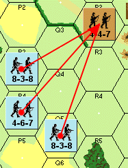

Combate de fuego (reglas 8–11)¶
8. PRINCIPIOS DEL COMBATE DE FUEGO¶
8.1 El Combate de Fuego es el proceso por el cual una unidad aplica sus factores de potencia de fuego contra unidades enemigas dentro de su LDV. El Combate de Fuego se resuelve en la Tabla de Fuego de Infantería (TFI) situada en la Tarjeta de Datos de Referencia Rápida.
►8.2 Ninguna unidad de infantería puede usar su potencia de fuego inherente y la de su arma de apoyo más de una vez por turno de jugador (EXCEPCIÓN: Combate Cuerpo a Cuerpo, 20). Puedes disparar con todas, algunas o ninguna de tus unidades en un turno de jugador dado.
8.3 El Combate de Fuego se dirige de forma uniforme contra todos los ocupantes de un hex, y el resultado de dicho fuego afecta a todas las unidades del hex objetivo. Un hex puede ser atacado cualquier número de veces mediante Combate de Fuego durante un turno.
8.4 Una escuadra nunca puede dividir su propia potencia de fuego inherente entre distintos hexes, pero sí podría disparar una o varias de sus armas de apoyo por separado contra un hex diferente (incluso en una dirección completamente distinta).
8.5 Las unidades en el mismo hex no tienen por qué disparar al mismo hex objetivo, pero si lo hacen deben combinar su fuego en una única tirada de dados (EXCEPCIONES: 22.3, 34.3, 36.3, 37.47).
►8.6 Las unidades pueden combinar sus factores de potencia de fuego para formar "Grupos de Fuego" (Fire Groups) y atacar el mismo hex objetivo en un único ataque combinado, solo si las unidades que disparan están en el mismo hex o en hexes adyacentes. Es posible tener una "cadena" prácticamente ilimitada de hexes adyacentes. Las unidades en hexes adyacentes no tienen por qué combinar sus factores de potencia de fuego, pero tienen la opción de hacerlo. Un Grupo de Fuego puede constar desde una hasta un número casi infinito de unidades atacantes.
8.7 [Véase Regla Opcional, página 22] Un jugador no tiene que predesignar todos los ataques; es decir, puede esperar el resultado de un ataque antes de comprometer el fuego de otras unidades.
8.8 Aunque todas las unidades de un hex objetivo se ven afectadas por igual por los resultados del Combate de Fuego, algunas pueden salir indemnes mientras otras se desmoralizan. Si se produce un resultado KIA, todas las unidades de escuadra y de Líder del hex quedan eliminadas. Pero si el resultado es un chequeo de moral, entonces todas las escuadras y Líderes de ese hex deben superar un Chequeo de Moral independiente — PRIMERO LOS LÍDERES. Los dados se tiran por separado para cada unidad que realiza un Chequeo de Moral (12.1).
8.9 Cuando la Tabla de Fuego de Infantería exige Chequeos de Moral, estos se resuelven inmediatamente antes de resolver cualquier otro ataque de fuego sobre ese hex.
9. MODIFICADORES DE POTENCIA DE FUEGO¶
9.1 FUEGO A QUEMARROPA (POINT BLANK FIRE): El factor de potencia de fuego de una unidad se duplica siempre que el hex objetivo sea adyacente a la unidad que dispara. (EXCEPCIÓN: ACANTILADOS, 44.1).
9.2 FUEGO A LARGO ALCANCE (LONG RANGE FIRE): Los factores de potencia de fuego de una unidad se reducen a la mitad cuando el hex objetivo excede el alcance impreso de la unidad que dispara. No se permiten ataques más allá del doble del alcance impreso de la unidad que dispara.
9.3 FUEGO EN MOVIMIENTO (MOVING FIRE): Los factores de potencia de fuego de una unidad se reducen a la mitad cuando la unidad que dispara se ha movido durante ese turno de jugador (EXCEPCIÓN: Lanzallamas, 22.8). La potencia de fuego de las Armas de Apoyo que no se movieron pero que son servidas por infantería que sí lo hizo también se reduce a la mitad.
9.4 FUEGO DE ÁREA (AREA FIRE): Los factores de potencia de fuego de una unidad se reducen a la mitad cuando la unidad objetivo está bajo un marcador de Ocultación (25.8).
9.5 Los modificadores de potencia de fuego son acumulativos.
Ejemplo: Una unidad que se mueve hasta quedar adyacente a una unidad enemiga vería su potencia de fuego reducida a la mitad (Fuego en Movimiento) y duplicada (Fuego a Quemarropa), con el resultado final de que usaría su potencia de fuego normal.
10. RESOLUCIÓN DEL COMBATE DE FUEGO¶
10.1 Suma todos los factores de potencia de fuego del Grupo de Fuego.
10.2 Comprueba si algún Modificador de Potencia de Fuego sirve para reducir a la mitad o duplicar la potencia de fuego del Grupo de Fuego.
10.3 Determina la columna correcta de la Tabla de Fuego de Infantería. Los factores de potencia de fuego de 1 a 36+ están impresos en grandes números negros en la cabecera de cada columna. Usa la columna más a la derecha que no exceda el total de factores de potencia de fuego ajustados del Grupo de Fuego. Los factores de potencia de fuego sobrantes se pierden.
10.4 Comprueba si se aplican modificadores a la tirada de dados debidos a los efectos del terreno, las características del objetivo o el liderazgo, y tira dos dados.
10.5 Tras añadir cualquier modificador a la tirada de dados, cruza la tirada ajustada con la columna de potencia de fuego correcta para determinar los resultados del Combate de Fuego.
10.6 Los resultados del combate se interpretan de la siguiente manera:
Ejemplo: Un grupo de fuego de dos escuadras 4-6-7, una MMG (4-12) y un Líder con valoración de liderazgo -2 disparan contra tres escuadras inmóviles y un Líder, situados a 7 hexes de distancia en terreno abierto. La potencia de fuego de las dos escuadras se reduce a la mitad debido al modificador de largo alcance, dejando al Grupo de Fuego con un total de 8 factores de potencia de fuego. La tirada de dados es un 8, que se modifica sumando -2 por la dirección de fuego del Líder, resultando en una tirada ajustada de "6". Un "6" bajo la Columna de Potencia de Fuego 8 produce un Chequeo de Moral +1.
Resultados de la Tabla de Fuego de Infantería (significado)¶
| Resultado | Significado |
|---|---|
| KIA | Todos los del hex objetivo son eliminados |
| M | Todas las escuadras y líderes del hex deben hacer un Chequeo de Moral. Los líderes chequean primero. |
| (#) | (1 o 2 o 3 o 4) – Igual que "M" pero con la penalización añadida de que el número mostrado se suma a la tirada de dados del Chequeo de Moral. |
| – | Sin efecto |
Verifica los valores con tus cartas/tablas originales.
Efectos del terreno sobre el objetivo (hex objetivo)¶
| Efectos del terreno/Objetivo | Hex objetivo |
|---|---|
| en terreno abierto, moviéndose ** | – 2 |
| en terreno abierto, sin moverse | 0 |
| en bosque, cráter de obús | +1 |
| en edificio de madera | +2 |
| en edificio de piedra | +3 |
| tras seto * | +1 |
| tras muro de piedra * | +2 |
| en trigal, moviéndose o sin moverse | 0 |
Verifica los valores con tus cartas/tablas originales.

11. MODIFICADORES DE EFECTOS DEL TERRENO¶
11.1 El terreno del hex objetivo puede cambiar la efectividad del Combate de Fuego añadiendo un modificador a la tirada de dados. Los efectos de estos modificadores son acumulativos.
11.2 * Los modificadores por seto y muro de piedra se aplican solo si el seto o el muro forma un lado del hex objetivo a través del cual se está trazando la LDV.
11.3 ** El modificador por disparar a un objetivo en movimiento en terreno abierto se usa solo durante la Fase de Fuego Defensivo contra unidades que se movieron en la Fase de Movimiento precedente (16.5).
11.4 El resto del terreno de un hex de carretera determina los efectos del terreno sobre el combate de un hex de carretera.
►11.5 MUROS Y SETOS: Los muros y setos no aparecen en el tablero 1, pero se reconocen fácilmente en los otros tableros como los símbolos grises o verdes que se ajustan a los lados de hex. Un ejemplo de lado de hex con muro es 3P6-3P7. Un ejemplo de lado de hex con seto es 3Y2-3Z2.
11.51 Una LDV solo puede trazarse a través de un lado de hex con muro o seto si la LDV termina o se origina en el hex formado por ese lado de hex con muro o seto, o si el hex de la unidad que dispara o el del objetivo tiene una ventaja de altura (7.4).
11.52 Las unidades que cruzan un lado de hex con seto o muro pagan penalizaciones de movimiento adicionales según se indica en la Tabla de Movimiento correspondiente.
►11.53 La tirada de dados del fuego trazado a través de un lado de hex con muro o seto hacia el hex formado por ese lado de hex se modifica según se indica en la Tabla de Modificadores de Efectos del Terreno (11.1), salvo que la unidad objetivo ocupe terreno más alto que el lado de hex con muro o seto (Ejemplo: 3V4). El modificador de un lado de hex con seto o muro se suma a cualquier modificador por el terreno dentro del hex objetivo.
Ejemplo: El fuego trazado a través de un muro hacia un hex de bosque tendría un modificador total de +3. De forma similar, el fuego trazado a través de un lado de hex con seto hacia un hex de terreno abierto contra unidades en movimiento tendría un modificador total de -1 (+1 por el seto, -2 por moverse en campo abierto).
11.6 Si el fuego de un Grupo de Fuego de varios hexes se dirige contra un objetivo de tal manera que no todas sus líneas de LDV cruzan el modificador de terreno (Arco Cubierto, (29.4), muros, setos), no se aplica ningún modificador de terreno a la tirada de dados de ese Grupo de Fuego. Ten en cuenta que esto se refiere solo al terreno o fichas que modifican el fuego a través de un lado de hex concreto, no al terreno que bloquea la LDV o que ocupa el objetivo (como un bosque o un edificio).
Ejemplo: Las unidades en los hexes P3, P4, Q5 han formado un Grupo de Fuego para disparar sobre el hex R2 con una única tirada de dados combinada. No hay modificador de terreno. El modificador +1 por el seto no se aplica porque la LDV desde el hex Q5 no cruza el lado de hex con seto. Si solo dispararan los hexes P3 y P4, habría un modificador adicional de +1 a la tirada de dados.